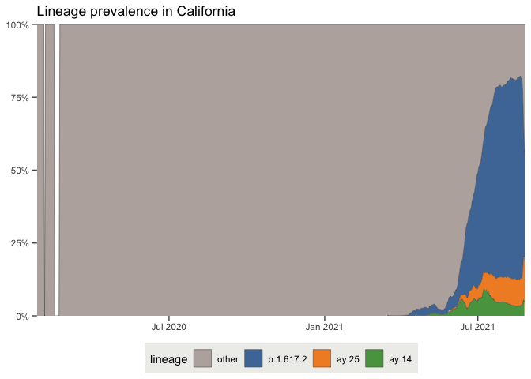
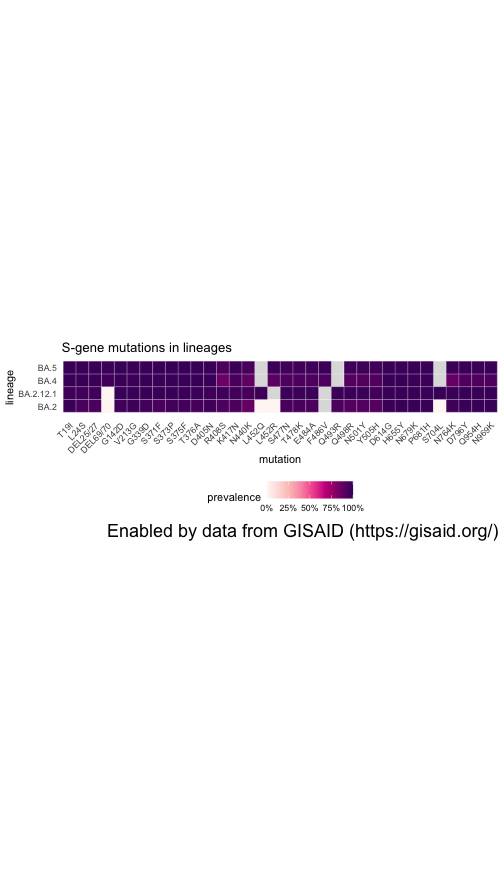
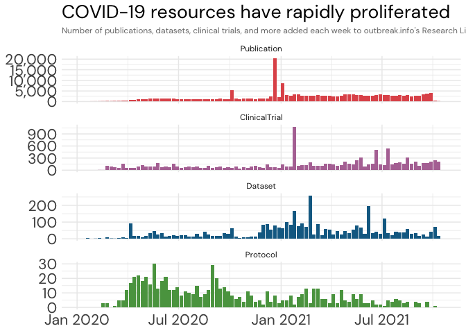
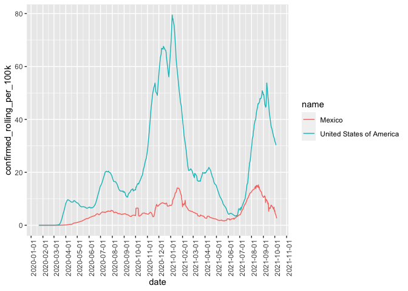

R package for outbreak.info
outbreak.info is a platform to discover and explore COVID-19 data and variants. Our Variant Reports allow researchers to track any emerging or known variant using customizable visualizations, enabling near real-time genomic surveillance. Our Epidemiology tools allow users to explore how COVID-19 cases and deaths are changing across locations.
The outbreakinfo R package provides access to the underlying genomic and epidemiology data on outbreak.info. This includes SARS-CoV-2 variant prevalence data calculated using the Bjorn package using data provided by GISAID. We standardize COVID-19 case and death data from Johns Hopkins University and the New York Times and calculate derived statistics.
Installation
# Install development version from GitHub
devtools::install_github("outbreak-info/R-outbreak-info")Getting Started
If you’re getting started using outbreakinfo, we recommend starting with our tutorial vignettes.
To access the genomic data (SARS-CoV-2 variant prevalences), you will need to create an account on GISAID before being able to access the data. It may take a few days for the registration to become active. Before calling the genomics functions, you’ll need to register your GISAID credentials:
outbreakinfo::authenticateUser()Please view our vignettes for examples of how to use the R package.
Examples
Genomic data
Lineage | Mutation Tracker
Provides access to the prevalence of a lineage, mutation(s), or lineage with additional mutations, to access the data underlying the outbreak.info Variant Tracker
- in this example, mutation
S : P681R
(https://outbreak.info/situation-reports?muts=S%3AP681R). View the Variant Tracker Vignette to explore more options.
library(outbreakinfo)
# Provide GISAID credentials using authenticateUser()
# Get the prevalence of mutation P681R in the Spike protein in Kansas over time.
P681R = getPrevalence(mutations = c("S:P681R"), location = "Kansas", logInfo = FALSE)
plotPrevalenceOverTime(P681R, title = "Prevalence of S:P681R in Kansas")
Location Tracker
Provides access to the prevalence of all lineages and variants in a country, state/province, or U.S. county, to access the data underlying the outbreak.info Location Tracker. View the Location Tracker Vignette to explore more options.
library(outbreakinfo)
# Provide GISAID credentials using authenticateUser()
# Get the prevalence of all circulating lineages in California over the past 90 days
ca_lineages = getAllLineagesByLocation(location = "California", ndays = 90)
#> Retrieving data...
# Plot the prevalence of the dominant lineages in California
plotAllLineagesByLocation(location = "California", ndays = 90)
#> Retrieving data...
#> Plotting data...
Lineage Comparison Tool
Provides access to the mutations per lineage, to access the data underlying the outbreak.info Lineage Comparison Tool.
library(outbreakinfo)
# Provide GISAID credentials using authenticateUser()
# Lookup which Pango lineages are associated with the Delta / B.1.617.2 Variant of Concern
delta_lineages = lookupSublineages("Delta", returnQueryString = FALSE)
# Get all mutations in the Delta lineages with at least 75% prevalent in one of the lineages.
delta_mutations = getMutationsByLineage(pangolin_lineage=delta_lineages, frequency=0.75, logInfo = FALSE)
# Plot the mutations as a heatmap
plotMutationHeatmap(delta_mutations, title = "S-gene mutations in Delta lineages")
Research Library
Provides access to the metadata on COVID-19 research, including publications, clinical trials, datasets, protocols, and more.
library(outbreakinfo)
library(dplyr)
library(ggplot2)
library(lubridate)
resources_by_date = getResourcesData(query = "date:[2020-01-01 TO *]", types=c("Publication", "ClinicalTrial", "Protocol", "Dataset"), fields = c("date", "@type"), fetchAll = TRUE)
# roll up the number of resources by week
resources_by_date = resources_by_date %>%
mutate(year = lubridate::year(date),
iso_week = lubridate::isoweek(date))
# count the number of new resources per week.
resources_per_week = resources_by_date %>%
count(`@type`, iso_week, year) %>%
# convert from iso week back to a date
mutate(iso_date = lubridate::parse_date_time(paste(year,iso_week, "Mon", sep="-"), "Y-W-a"))
# Make it a bit prettier, by sorting by the relative proportion of resource types
type_frequency = resources_by_date %>%
count(`@type`) %>%
arrange(desc(n)) %>%
pull(`@type`)
resources_per_week$`@type` = factor(resources_per_week$`@type`, type_frequency)
ggplot(resources_per_week, aes(x = iso_date, y = n, fill = `@type`)) +
geom_bar(stat="identity") +
ggtitle("COVID-19 resources have rapidly proliferated", subtitle="Number of publications, datasets, clinical trials, and more added each week to outbreak.info's Research Library") +
theme_minimal() +
theme(
text = element_text(family="DM Sans"),
axis.title = element_blank(),
axis.text = element_text(size = 16),
plot.title = element_text(size = 20),
plot.subtitle = element_text(colour="#777777", size=9)
) +
scale_x_datetime(limits = c(min(resources_per_week$iso_date, na.rm = T), max(resources_per_week$iso_date, na.rm = T)), date_labels = "%b %Y") +
scale_y_continuous(label=scales::comma) +
scale_fill_manual(values = c(Publication = "#e15759", ClinicalTrial = "#b475a3", Dataset = "#126b93", Protocol = "#59a14f")) +
facet_wrap(~`@type`, scales = "free_y", ncol = 1) +
theme(legend.position = "none")
Cases & Deaths
Replicates the daily confirmed cases visualization on outbreak.info - in this example, the United States and Mexico.
# Plots the daily confirmed cases per capita for the United States and Mexico.
library(outbreakinfo)
plotEpiData(locations = c("United States of America", "Mexico"), variable = "confirmed_rolling_per_100k")
Data Sources
SARS-CoV-2 virus sequences
We would like to thank the GISAID Initiative and are grateful to all of the data contributors, i.e.the Authors, the Originating laboratories responsible for obtaining the specimens, and the Submitting laboratories for generating the genetic sequence and metadata and sharing via the GISAID Initiative, on which this research is based. GISAID data provided on this website are subject to GISAID’s Terms and Conditions.
The GISAID Initiative promotes the rapid sharing of data from all influenza viruses and the coronavirus causing COVID-19. This includes genetic sequence and related clinical and epidemiological data associated with human viruses, and geographical as well as species-specific data associated with avian and other animal viruses, to help researchers understand how viruses evolve and spread during epidemics and pandemics.
GISAID does so by overcoming disincentive hurdles and restrictions, which discourage or prevented sharing of virological data prior to formal publication.
The Initiative ensures that open access to data in GISAID is provided free-of-charge to all individuals that agreed to identify themselves and agreed to uphold the GISAID sharing mechanism governed through its Database Access Agreement.
Cases & deaths
Confirmed cases, recovered cases, and deaths over time for countries outside the United States, and provinces in Australia, Canada, and China are provided by Johns Hopkins University Center for Systems Science and Engineering. See data FAQ.
Confirmed cases and deaths over time for the United States, U.S. States, U.S. Metropolitan Areas, U.S. cities and U.S. counties are provided by the New York Times. Note that “New York City” refers to the combined totals for New York, Kings, Queens, Bronx and Richmond Counties; “Kansas City” refers to cases within the Missouri portion of the Kansas City Metropolitan area and values for Jackson, Cass, Clay, and Platte counties are the totals excluding the KCMO data; cities like St. Louis that are administered separately from their containing county are reported separately. See other geographic exceptions.